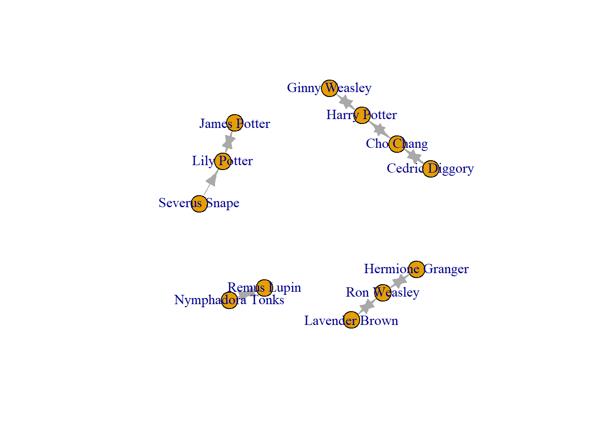
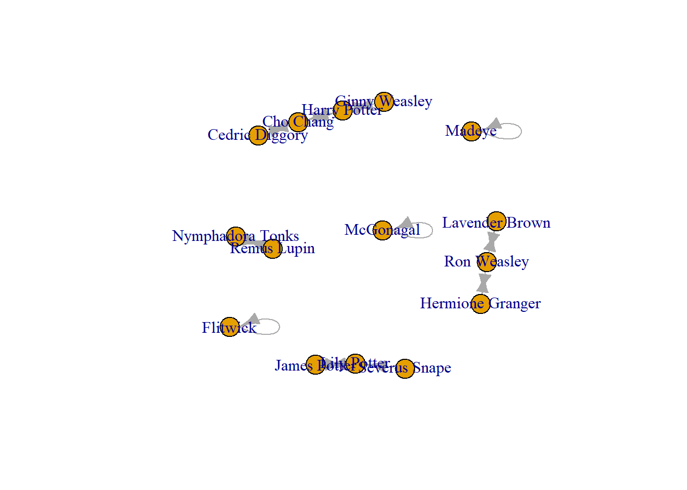
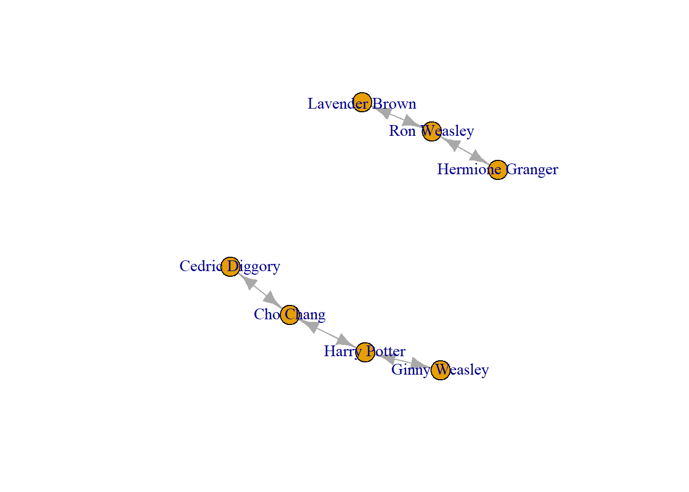
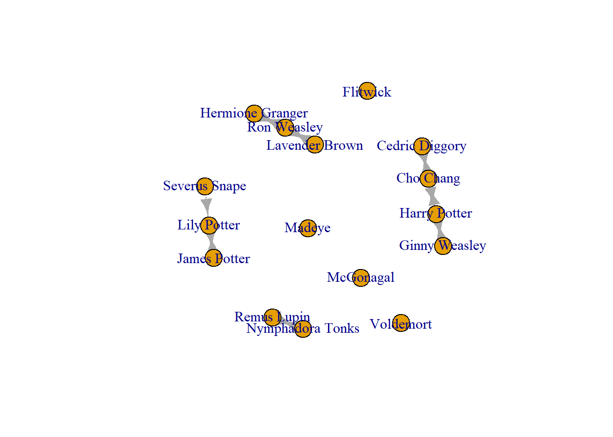
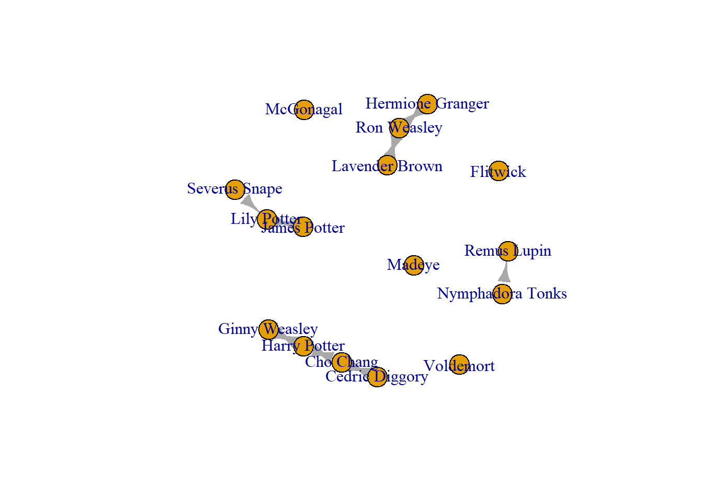
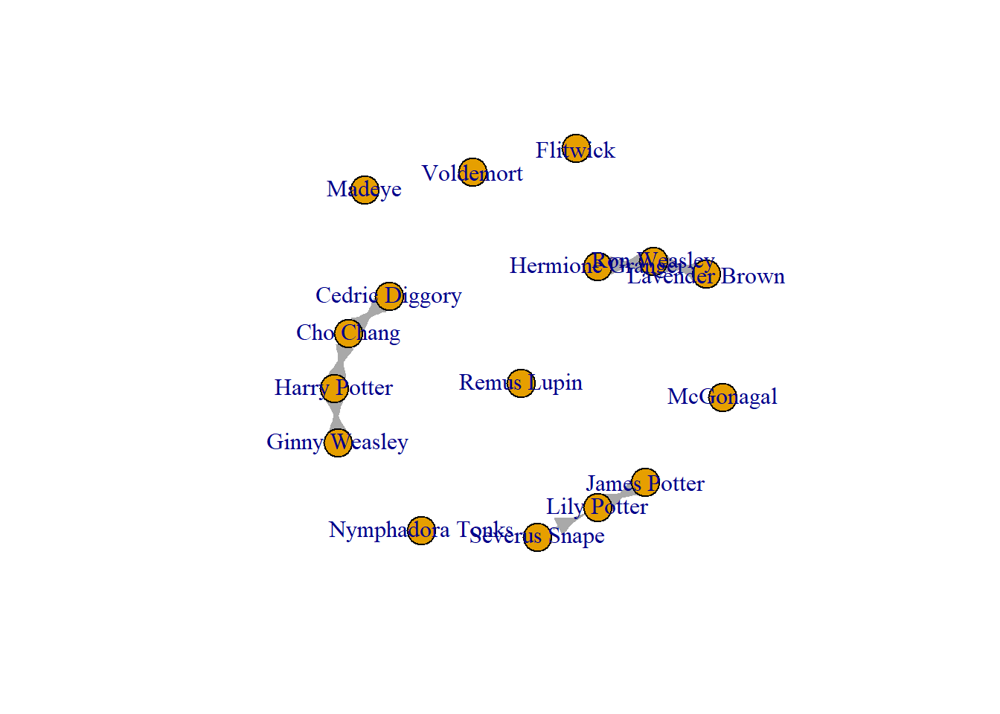
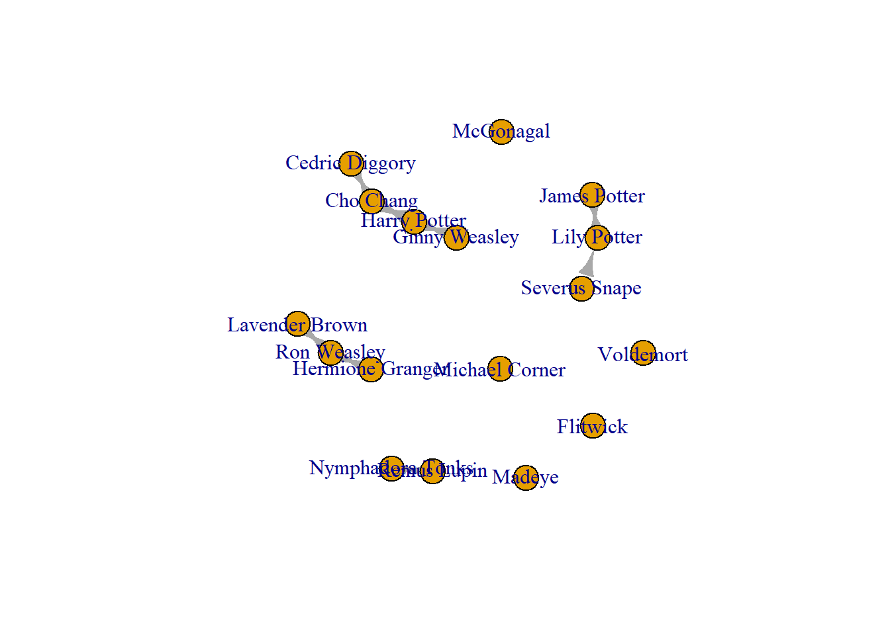
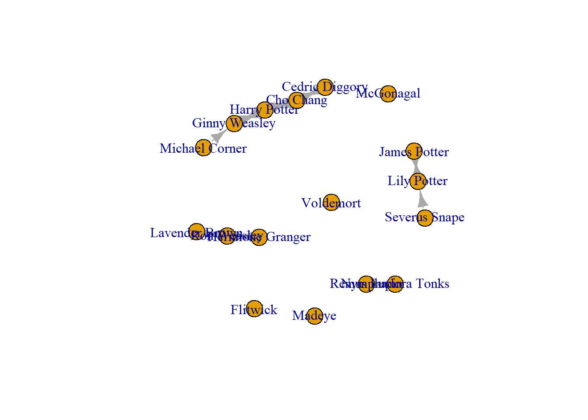

library(igraph)5 Cleaning Network Data - Trimming and Adding
This script is intended to help you to clean up network data that you have collected or got access to.
| LEARNING ELEMENTS - Examining Data and Practicing Wrangling |
|
5.1 Deleting Nodes.
To delete nodes from your network, you use the delete_vertices() function in igraph. There are several reasons you may wish to remove nodes from the network. One very common issue with cleaning network data is knowing what to do with nodes isolates. Isolates are those who are a part of your network, but who have no connections to others in the group. Isolates are stored in network data differently depending on how your data are stored.
If your data are stored in an adjacency matrix, then isolates are those with no 1s in the matrix. Ensuring that R recognises them as isolated is very simple. Bring in the data, and then convert it into a matrix. Any that are isolated will show as isolates.
hog_crush_matrix <- read.csv(file.choose(), row.names = 1, header = TRUE) # select Hogwarts Crushes matrix.csv
crush_matrix <- as.matrix(hog_crush_matrix)
hog_crush_net_mat <- graph_from_adjacency_matrix(crush_matrix, mode = "directed", diag = FALSE)
plot(hog_crush_net_mat)
However, things are not as straightforward when you are working with edgelists. With this structure, you have only two columns, one for senders and the other for receivers. If there is an individual in the group who neither sends nor receives, but is a legitimate participant of the group, what do you do with them? One way of recording such isolates in an edgelist is list them as connected to themselves (known as a self loop). Take a look at this edgelist and you will see that these individuals are connected to themselves
hog_crush_correct <- read.csv(file.choose(), header=TRUE) # select Hogwarts Crushes Edgelist_SELFLOOPS.csv
#Take a look at the data
hog_crush_correct Crusher Crush
1 Harry Potter Ginny Weasley
2 Harry Potter Cho Chang
3 Ron Weasley Hermione Granger
4 Hermione Granger Ron Weasley
5 Ron Weasley Lavender Brown
6 Ginny Weasley Harry Potter
7 Lily Potter James Potter
8 James Potter Lily Potter
9 Severus Snape Lily Potter
10 Nymphadora Tonks Remus Lupin
11 Remus Lupin Nymphadora Tonks
12 Lavender Brown Ron Weasley
13 Cho Chang Cedric Diggory
14 Cho Chang Harry Potter
15 Cedric Diggory Cho Chang
16 McGonagal McGonagal
17 Madeye Madeye
18 Voldemort Voldemort
19 Flitwick FlitwickNow when you make this a graph object R does something different.
Crush_correct_net <- graph_from_data_frame(hog_crush_correct, directed = TRUE)
plot(Crush_correct_net)
These do not look great, and can cause confusion to viewers of the network visual and even influence some of the mathematics of your analysis. We will deal with those in a moment.
Another way to deal with isolates from an edgelist is to list noone in the “to” column. In other words, you list the name of the person in your network but leave the cell next to them blank. However, this approach also has additional steps to take before it is clean and ready to go.
hog_crush_wrong <- read.csv(file.choose(), header=TRUE) # select Hogwarts Crushes Edgelist_EMPTY NODE.csvTake a look at the edgeist now it is in and you will see I added a few more characters to this group: Madeye, Flitwick, McGonagal, and Voldemort. They are all listed in the “Crusher” (from) column but have no connection to anyone in the “crush” column. This makes sense, since we know little about their romances from the Harry Potter Saga.
hog_crush_wrong Crusher Crush
1 Harry Potter Ginny Weasley
2 Harry Potter Cho Chang
3 Ron Weasley Hermione Granger
4 Hermione Granger Ron Weasley
5 Ron Weasley Lavender Brown
6 Ginny Weasley Harry Potter
7 Lily Potter James Potter
8 James Potter Lily Potter
9 Severus Snape Lily Potter
10 Nymphadora Tonks Remus Lupin
11 Remus Lupin Nymphadora Tonks
12 Lavender Brown Ron Weasley
13 Cho Chang Cedric Diggory
14 Cho Chang Harry Potter
15 Cedric Diggory Cho Chang
16 McGonagal
17 Madeye
18 Voldemort
19 Flitwick When we make this a graph object, R does something funky.
The new characters are all connected to a nameless node and it looks, on visual inspection, that they all have a crush on the same person.
I have highlighted that node in the visualization below. The red node is nameless because the edgelist has empty (nameless) cells.
crush_wrong_net <- graph_from_data_frame(hog_crush_wrong, directed = TRUE)
plot(crush_wrong_net)V(crush_wrong_net)$wrong <- ifelse(V(crush_wrong_net)$name %in% c(""), "red", "white")
plot(crush_wrong_net, vertex.color = V(crush_wrong_net)$wrong)
One way to deal with this is to delete the superfluous node. You do this using the delete_vertex() function. ##This fixes the issue once you have the data in Rstudio, but the issue still exists in your dataset. If you choose to structure your network data this way, you will have to remember to remove this node every time. This may be harder to do/realise when dealing with large dense networks.
crush_wrong_net <- delete_vertices(crush_wrong_net, "")
plot(crush_wrong_net)
Sometimes, you want to remove all of the isolated nodes from your network because you only care about those who have connections to others. To do this, you identify those with no connections (degree = 0) and them remove them from your network. I suggest making a new object with this sub network.
tyg hog_crush_isol <- which(degree(Crush_correct_net)==0)}
Now you use the delete_vertices() command and remove those in the vector you just created (those with degree = 0)
plot(Crush_no_isol)Now this new object has only those nodes with ties to others in the network.
Other than isolates, you you might decide to remove one or more specific nodes from your network. For example, in this hogwarts dataset, we may want to remove those who are not students at Hogwarts (i.e. remove teachers or adults). To do this, you would use the delete_vertices() option.
One approach is to delete them one-by-one and identify them by their name.
hog_crush_students <- delete_vertices(Crush_correct_net, "Voldemort")
plot(hog_crush_students)
A quicker way, if you are deleting multiple, is to make a vector with all the names of those you want to remove, then use the delete_vertices() command.
hog_adults <- c("Severus Snape", "Lily Potter", "James Potter", "Nymphadora Tonks", "Remus Lupin", "Voldemort", "Flitwick", "McGonagal", "Madeye")
hog_crush_students <- delete_vertices(Crush_correct_net, hog_adults)
plot(hog_crush_students)
This new version removed all unwanted nodes at once.
5.2 Adding Nodes
Use add.vertices(graph name, number of additional vertices, attribute = )
crush_added <- add.vertices(Crush_correct_net, 1, name = "Michael Corner")
plot(crush_added)
5.3 Deleting edges
To remove unwanted edges you can use the delete_edges() command. Let’s begin with our edgelist from above and select the edges that are looped by using the E() command coupled with the is.loop() option. That way we can delete the selfloops
Crush_correct_net <- delete_edges(Crush_correct_net , E(Crush_correct_net )[which_loop(Crush_correct_net )])
plot(Crush_correct_net)
Additionally, you may want to delete edges between two specific nodes.
edges_to_delete <- E(Crush_correct_net)[(.from("Remus Lupin") & .to("Nymphadora Tonks"))]
Crush_edge_delete <- delete_edges(Crush_correct_net, edges_to_delete)
plot(Crush_edge_delete)
To delete all edges between two nodes
edges_to_delete2 <- E(Crush_correct_net)[(.from("Remus Lupin") & .to("Nymphadora Tonks")) | .from("Nymphadora Tonks") & .to("Remus Lupin")]
Crush_edge_delete <- delete_edges(Crush_correct_net, edges_to_delete2)
plot(Crush_edge_delete)
5.4 Add Edges
Use add.edges().
crush_added <- add.edges(crush_added, edges = c("Michael Corner", "Ginny Weasley"))
plot(crush_added)
Now to add the reciprocated tie
crush_added <- add.edges(crush_added, edges = c("Ginny Weasley", "Michael Corner"))
plot(crush_added)